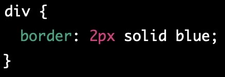
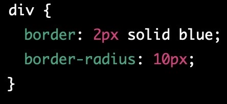

CSS
Was ist CSS?
- CSS ist eine Sprache zur Gestaltung von Webseiten wie z.B. von Text, Bildern, Tabellen, Formularen.
- Mit CSS ist es möglich, das Design vom Inhalt zu trennen.
- Die Änderung des Layouts und Designs ist möglich, ohne den HTML Code zu ändern.
- Man kann das Aussehens der kompletten Website von verschiedensten Elementen kontrollieren.
Wie werden CSS Elemente in HTML angewendet?
- Externe Stylesheets: Es kann eine seperate CSS-Datei erstellt werden, die im HTML head-Bereiech verknüpft werden kann.
- Interne Stylesheets: Alle CSS Regeln werden innerhalb des head-Tags des HTML Dokuments geschrieben, hierfür wird keine seperate Datei benötigt.
- Inline-Styles: Die CSS Regeln werden innerhalb des HTML-Elemnts durch Verwendung des Style-Attributs geschrieben.
Unabhängig von der Methode, ist die Syntax dieselbe.
Wie kann man Schriftarten und Farben definieren?
- Schriftarten: Schriftarten können über die CSS Eigenschft "font-family" definiert werden.
- Farben: Farben können über die Eigenschaft "color / backgroundcolor" über den RGB-Wert oder der Englischen Bezeichung der Farben defeniert werden.
Wie kann man Formen definieren?
Formen können über "boarder" und "boarder-radius" definiert werden
- Beispiel blaues Rechteck mit einer Dicke von 2px

- Beispiel Kreis mit einem Durchmesser von 100px und einer Dicke von 2px

Durch Kombination von "boarder" und "boarder-radius" können auch weiter Formen definiert werden.
Was kann man alles machen mit CSS?
- Farbe und Hintergründe definieren
- Schriftarten definieren
- Layouts erstellen (Flexbox, Grid, Floats und Positionierung, Abstand von Elementen, Definieren von Größe der Elemente)
- Animationen und Übergänge erstellen (Hover-effekte, klickbare-Menüs)
- Responsive Design (automatische Anpassung an den Bildschirm + Mobilgeräte)
- Benutzerdefinierte Formen
- Barrierefreiheit (Verbesserung von Lesbarkeit von Texten / Farbkontrast / Navigation für Behinderte Menschen)
Warum ist es sinnvoll mit CSS zu arbeiten?
- Trennung von Inhalt und Design: Aussehen von Inhalt und Desgin kann in seperste Dateien getrennt werden.
- Aussehen kann effizienter Gestaltet werden.
- Felxibilität
- Barrierefreiheit
- Kompatibilität
Welche Designregeln sind sinnvoll?
- einheitliche Farbpalette
- Lesbarkeit
- Layout für verschieden Geräte
- Symmetrie und Ausrichtung
- Grid-Systeme und Flexboxen